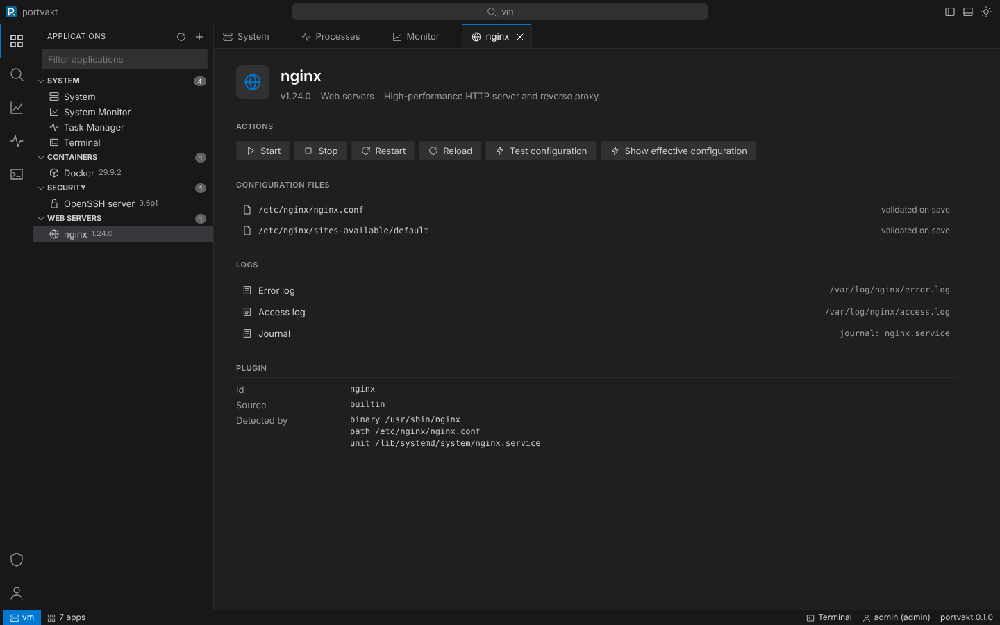
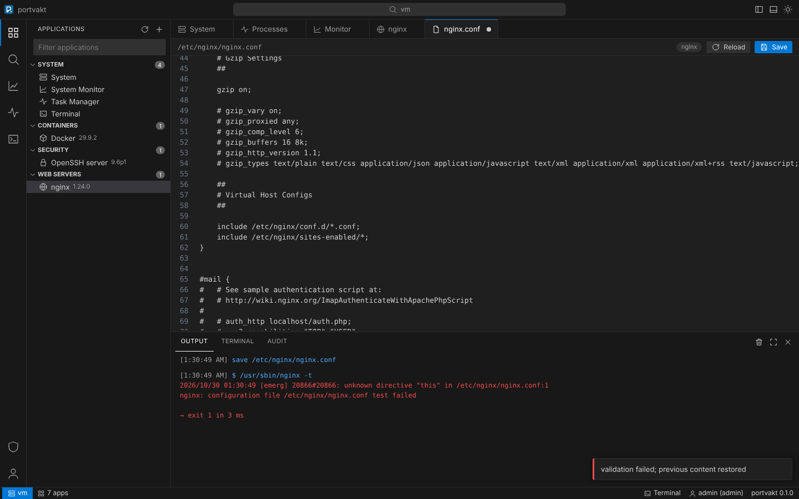
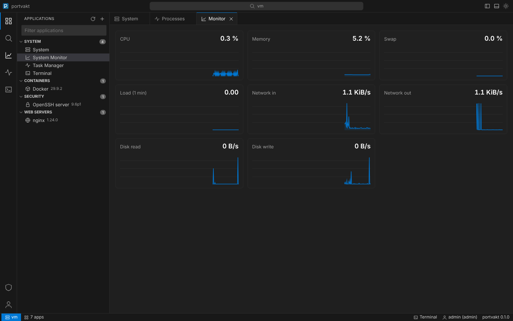
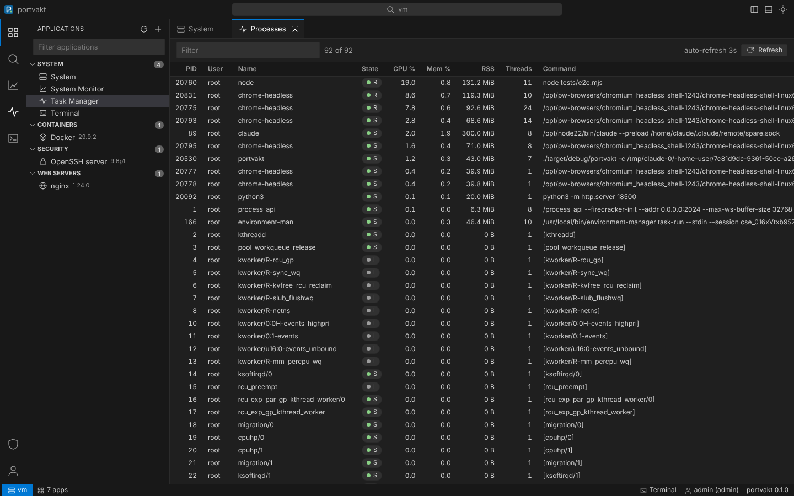
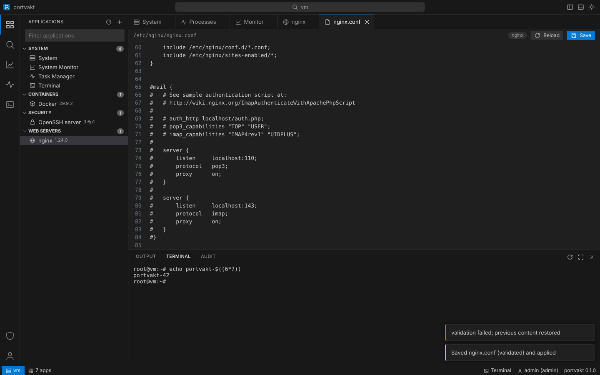
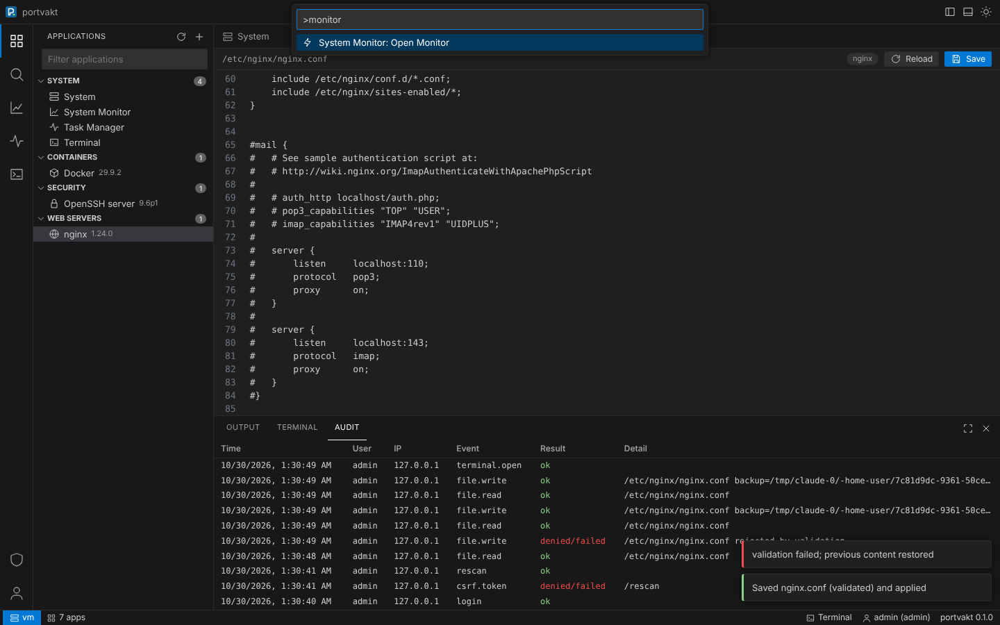

The gatekeeper
for your server
A secure web admin for Linux in a single Rust binary. It finds what's installed, lets you manage it from a VS Code-style interface, and learns new programs from a few lines of TOML.
curl -fsSL https://hexagon.github.io/portvakt/install.sh | sudo sh
Static binaries for x86_64 and aarch64 · systemd service · update with sh -s -- update

Everything you SSH in for, in a browser tab
portvakt scans the host, shows the applications it recognises and gives each one a consistent set of controls. The interface is modelled on VS Code, so it feels familiar from the first click.
Auto-detection
Binaries, systemd units, config paths, running processes and listening ports tell portvakt what's installed.
Safe config editing
Every save is backed up, validated with the program's own checker (nginx -t, sshd -t…) and rolled back if it fails.
Services and actions
Start, stop, reload, test configuration and any maintenance command a plugin defines, with output in the panel.
Monitor and task manager
Live CPU, memory, network and disk charts. A process list that works on every distro, with terminate and kill.
Terminal
A real PTY in the bottom panel when you need it. One setting turns it off when you don't.
Logs and audit trail
Log files and journald per application. Every login, action and file change is recorded.
Teach it any program in one file
A plugin is a TOML manifest: how to detect the program, which commands it may run, which files it may edit and how to check them. No code, nothing sent to the browser, validated before it loads.
portvakt plugin new redis-serverdrafts one from the live system- Tables from any command's JSON or column output, with row actions
- Parameters are validated against strict patterns; commands never touch a shell
- Rust plugins for the rest: the task manager and monitor are built that way
# plugins/redis.toml
id = "redis"
name = "Redis"
category = "Databases"
icon = "database"
[detect]
any = [{ binary = "redis-server" },
{ systemd_unit = "redis-server.service" }]
[version]
command = ["redis-server", "--version"]
regex = 'v=(\S+)'
[service]
systemd = "redis-server.service"
[[files]]
path = "/etc/redis/redis.conf"
after_save = "restart"
[[logs]]
label = "Journal"
journal = "redis-server.service"Built to face the internet
An admin panel is a target. portvakt refuses unsafe setups instead of warning about them, and keeps the attack surface small: one binary, no runtime, no third-party scripts.
- No TLS on a public address? It won't start.
- Argon2id passwords, TOTP two-factor, per-IP and per-account lockout
HttpOnlySameSite=Strict__Host-cookies, CSRF tokens and Origin checks- Strict Content-Security-Policy; every asset is embedded in the binary
- argv-only execution with a fixed PATH, cleared environment and timeouts
- Optional unprivileged mode with a generated sudoers allow-list

A closer look
Command palette, tabs, a resizable panel, light and dark themes: it works the way your editor does.




Let your coding agent add the next plugin
The repository ships instructions written for AI coding agents: where things live, the rules a plugin must follow, and how to verify one. Point your agent at a program and review the pull request.
- AGENTS.md: architecture, invariants, workflow
- Plugin reference with a review checklist
- Plain-text copies for tools: AGENTS.md, PLUGINS.md, template
# In a checkout of Hexagon/portvakt
> Add a plugin for HAProxy. Follow AGENTS.md.
cargo run -- plugin new haproxy > plugins/haproxy.toml
# …refines detection, adds `haproxy -c -f {file}`…
cargo run -- plugin validate --detect plugins/haproxy.toml
ok plugins/haproxy.toml (haproxy)
detected=true version=Some("2.8.5")
cargo test
test result: ok.